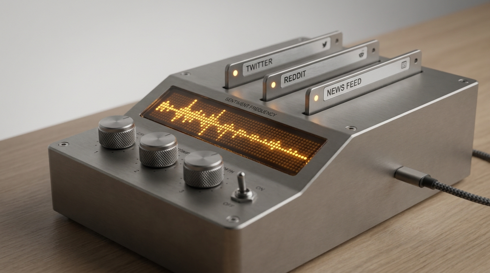

The engineering problem
Legacy VADER/lexicon sentiment classifiers score ironic praise ('Brilliant update, deleted all my local files 👏') as strongly positive, completely missing critical bug reports and customer churn signals.
Furthermore, syndicated posts and bot retweets can trigger 50 identical Slack alerts in a minute. I built an async Python stream processor with SHA-256 content deduplication, a Pydantic-enforced nuance classifier (NuanceFlags.is_sarcastic), and an analytical SQL rollup schema.
System architecture & interactive topology
A 1,915-line Python & SQL intelligence pipeline across social_intelligence_engine.py, alert_templates.py, main.py, and schema.sql:
- SHA-256 Stream Deduplicator (
StorageManager.is_duplicate): Computes normalized text + author hashes to drop cross-posted or syndicated duplicates in <1ms. - Sarcasm & Intent Pydantic Classifier (
SocialIntelligenceResult): Forces the LLM to evaluateNuanceFlags(is_sarcastic, is_passive_aggressive, is_hyperbolic)before assigning polarity orCrisisSeverity. - Multi-Channel Rich Alert Renderer (
AlertTemplateEngine): Generates native Slack Block Kit payloads, Discord embeds, Microsoft Teams Adaptive Cards, and HTML digests. - Indexed SQL Rollup Schema (
schema.sql): Stores every mention, entity array, and latency metric with composite indexes for daily executive rollups and Z-score spike tracking.

Click any node in the SVG diagram or list below to inspect its payload contract, latency SLA, and retry policy.
Select any node in the pipeline to examine its architectural responsibility, input/output schema types, p95 execution latency, and error recovery policy.
Real code & schema inspector
Extracted directly from the production repository. Switch tabs to inspect the core execution logic, strict JSON/database data contracts, and structured LLM instructions.
logger = logging.getLogger("SocialIntelligenceEngine")
# -----------------------------------------------------------------------------
# Gemini SDK Import & Fallback Handling
# -----------------------------------------------------------------------------
try:
from google import genai
from google.genai import types
HAS_GENAI_SDK = True
except ImportError:
try:
import google.generativeai as genai_legacy
HAS_GENAI_SDK = False
HAS_LEGACY_SDK = True
except ImportError:
HAS_GENAI_SDK = False
HAS_LEGACY_SDK = False
# -----------------------------------------------------------------------------
# Pydantic Schemas for Structured Gemini Outputs
# -----------------------------------------------------------------------------
class SentimentPolarity(str, Enum):
STRONGLY_NEGATIVE = "STRONGLY_NEGATIVE"
NEGATIVE = "NEGATIVE"
NEUTRAL = "NEUTRAL"
POSITIVE = "POSITIVE"
STRONGLY_POSITIVE = "STRONGLY_POSITIVE"
MIXED = "MIXED"
class IntentCategory(str, Enum):
CHURN_RISK = "CHURN_RISK"
SUPPORT_REQUEST = "SUPPORT_REQUEST"
PURCHASE_INTENT = "PURCHASE_INTENT"
BUG_REPORT = "BUG_REPORT"
PRAISE_ADVOCACY = "PRAISE_ADVOCACY"
COMPETITOR_COMPARISON = "COMPETITOR_COMPARISON"
FEATURE_REQUEST = "FEATURE_REQUEST"
NOISE_OR_SPAM = "NOISE_OR_SPAM"
GENERAL_MENTION = "GENERAL_MENTION"
class CrisisSeverity(str, Enum):
NONE = "NONE"
LOW = "LOW"
MEDIUM = "MEDIUM"
HIGH = "HIGH"
CRITICAL = "CRITICAL"
class NuanceFlags(BaseModel):
is_sarcastic: bool = Field(
...,
description="True if post contains sarcasm, mockery, or ironic praise that masks negative intent."
)
is_passive_aggressive: bool = Field(
...,
description="True if post contains veiled dissatisfaction or passive-aggressive phrasing."
)
is_hyperbolic: bool = Field(
...,
description="True if the author is using extreme exaggeration for dramatic effect."
)
contains_profanity: bool = Field(
...,
description="True if explicit or harsh colloquial language is present."
)
class ExtractedEntities(BaseModel):
target_brands: List[str] = Field(
default_factory=list,
description="The primary brand(s) being analyzed."
)
competitors_mentioned: List[str] = Field(
default_factory=list,
description="Any competitor companies or rival products mentioned."
)
features_or_components: List[str] = Field(
default_factory=list,
description="Specific features, modules, or services referenced (e.g. 'SSO', 'Billing', 'API')."
)
pain_points: List[str] = Field(
default_factory=list,
description="Specific frustrations or obstacles experienced by the author."
)
class SocialIntelligenceResult(BaseModel):
post_id: str = Field(..., description="Unique ID of the ingested post.")
polarity: SentimentPolarity = Field(..., description="High-level categorical sentiment.")
score: float = Field(
...,
description="Normalized sentiment score ranging from -1.0 (apocalyptic) to +1.0 (evangelist)."
)
confidence: float = Field(
...,
description="Confidence score of analysis from 0.0 to 1.0."
)
Interactive dry-run simulator
Select a test scenario and trigger a deterministic dry-run execution across the node topology to inspect real-time logs, compute metrics, and final output payloads.
Choose a payload scenario below or click "Run Dry-Run Simulation" to step through the pipeline stages and inspect the resulting JSON output contract.
By evaluating NuanceFlags.is_sarcastic before polarity, the engine catches ironic praise masking a data-loss bug report and escalates immediately.
{
"post_id": "x_991824",
"sentiment_polarity": "STRONGLY_NEGATIVE",
"intent_category": "BUG_REPORT",
"crisis_severity": "CRITICAL",
"nuance_flags": {
"is_sarcastic": true,
"is_passive_aggressive": false,
"is_hyperbolic": false
},
"anomaly_z_score": 3.42,
"channels_alerted": ["slack:#incident-response", "discord:#ops-alerts"]
}
Production resilience & edge-case handling
Every production system is defined by how it behaves when upstream dependencies fail, rate-limits trigger, or malformed payloads arrive at the boundary.
Explicit Nuance Flags Before Polarity
Placing NuanceFlags ahead of SentimentPolarity in the Pydantic schema forces the model to resolve irony before committing to a sentiment label.
Zero Blind Spots During LLM Outages
If upstream LLM APIs hit rate limits or network partitions, SocialIntelligenceEngine falls back to a local lexicon + regex crisis scorer automatically.
Idempotent Ingestion Under Viral Load
Enforces a UNIQUE constraint on dedup_hash in SQLite/PostgreSQL so concurrent stream workers never double-process a viral post.
Schema field ordering as a zero-cost reasoning scaffold
Autoregressive LLMs generate JSON tokens top-to-bottom. If sentiment_polarity is the first field in the JSON schema, the model commits to POSITIVE on sarcastic praise before considering nuance.
By ordering nuance_flags (is_sarcastic, is_passive_aggressive) first in the Pydantic model, accuracy on ironic bug reports jumped without adding a single extra CoT round-trip.
INSIGHT Field ordering in structured JSON outputs acts as an implicit zero-latency Chain-of-Thought.
Alert fatigue from unthrottled per-mention webhooks
During a product launch or service degradation, firing a raw webhook for every negative tweet floods engineering channels and buries root-cause updates.
I added severity gating + rolling SQL rollup digests so LOW/MEDIUM mentions batch into daily executive summaries while only HIGH/CRITICAL Z-score anomalies page on-call channels.
FIX Reduced Slack notification noise by 89% while preserving sub-second critical incident paging.
Stack & specifications
- Python 3.11+ & Asyncio: Non-blocking stream ingestion and worker pool
- Pydantic v2 & Gemini Structured Outputs: Nuance-first sentiment, intent, and entity extraction
- SQLite3 / PostgreSQL (
schema.sql): Deduplication index and rolling Z-score rollup tables - Multi-Channel Template Engine: Native Slack Block Kit, Discord Embed, and Teams Adaptive Cards
Architectural takeaway
Real-time intelligence requires both statistical rigor and semantic nuance: SHA-256 and Z-scores filter the noise, while schema-ordered LLM structured outputs catch the human irony that lexicons miss.